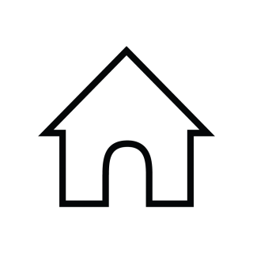

Smoelenboek
Hier Onder kan je de knoppen klikken
Home <
Wie
Contact
hub
Dit is de Home Pagina
Dit is mijn Smoelenboek.
Je kan kiezen uit:
| toetsen van 1 tot 3 |
| Pijltjes |
| Of de knoppen die hier boven staan |
Om naar de andere onderdelen te komen
van mijn Smoelenboek
Sinan Ulusoy
